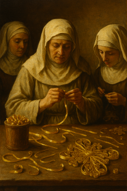
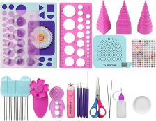
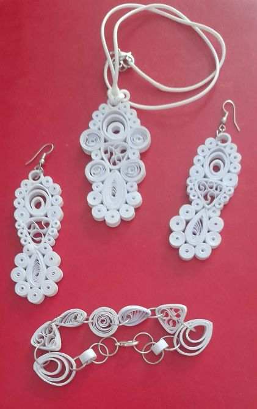
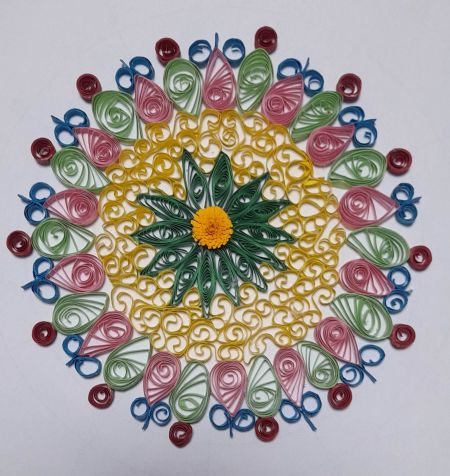
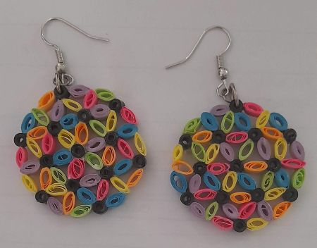

1
Cuéntame qué imaginas
Explícame qué tipo de creación buscas: un nombre, un detalle especial, una decoración o una pieza personalizada.

Primores Marife
Donde unas sencillas tiras de papel se convierten en pequeñas obras de arte hechas a mano.
Descubre mis creacionesCon unas sencillas tiras de papel pueden nacer flores, animales, letras, mandalas y un sinfín de creaciones hechas completamente a mano. Cada pieza es única y convierte un material cotidiano en un regalo lleno de imaginación y cariño.
En Filigranas Marife, cada creación nace de la paciencia, la creatividad y el amor por los pequeños detalles. Mediante la técnica de la filigrana de papel, también conocida como quilling, las tiras de papel se enrollan, moldean y combinan cuidadosamente para dar vida a composiciones llenas de color, elegancia y personalidad.
Desde delicados pendientes hasta cuadros decorativos, flores, figuras, nombres personalizados o regalos únicos, cada obra está realizada artesanalmente para sorprender y emocionar a quien la recibe.



Cada pieza nace de la combinación entre papel, imaginación y muchas horas de trabajo artesanal. Descubre algunas de las creaciones realizadas por Marife.



Cada creación comienza con una idea y termina convirtiéndose en una pieza única. Entre ambos momentos hay paciencia, precisión y muchas horas de trabajo artesanal.
Primero nace la idea. Se seleccionan las formas, los colores y el estilo que tendrá la creación final.


Las tiras de papel se cortan cuidadosamente, eligiendo el tamaño y grosor adecuado para cada detalle.


Con ayuda de herramientas especiales, cada tira se enrolla y transforma en espirales, pétalos, hojas y diferentes formas.


Las pequeñas piezas se unen cuidadosamente hasta crear el diseño imaginado.


Cada pieza recibe los últimos retoques para conseguir un acabado cuidado y especial.


El resultado final es una pieza artesanal hecha con papel, imaginación y mucho cariño.


Cada filigrana comienza con una idea especial. Un regalo, un recuerdo, una decoración o una creación personalizada que poco a poco se transforma en una pieza única hecha a mano.
Explícame qué tipo de creación buscas: un nombre, un detalle especial, una decoración o una pieza personalizada.
Podemos decidir colores, formas y detalles para que la creación tenga la personalidad que estás buscando.
Hablaremos de la idea, el tiempo necesario y todos los detalles para conseguir un resultado especial.
Comienza el proceso artesanal para crear una pieza única, hecha con paciencia, imaginación y mucho cariño.
Cada creación nace de una sencilla tira de papel y termina convirtiéndose en una pieza única gracias a la imaginación, la paciencia y el trabajo artesanal.
✨ Espero haberte mostrado que el papel puede convertirse en algo extraordinario.
Será un placer crear contigo una pieza especial llena de color y emoción.
🌸 Tu próxima creación puede empezar aquí.
Si tienes una idea en mente o quieres una filigrana personalizada, puedes ponerte en contacto conmigo a través de: